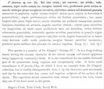

Click on images to enlarge
{kind=link}

Fig. 1. Paropsis funerea, description
Name
Paropsis funerea Blackburn, 1896
Corresponds to
No correspondence with any of the species codes.
Diagnosis and Notes
Blackburn (1896b) deals with T. funerea as part of his subgroup i (i.e., those species with "strongly marked characters"). Within that group, he characterises it as:
AA. Prosternum sulcate down the middle, but very wide, and scarcely narrowed in front;
B. Colour testaceous or red [not black]; elytra moderately punctured;
C. Prothorax at its widest scarcely behind the middle.
Couplet B includes the three species T. extranea, sternalis and funerea, all with a very wide prosternal process and elytra with rows of dark verrucae. At least the last two of these are distributed in the drier inland Australia. From Blackburn's description, funerea seems to be the darker of the three. I suspect that funerea does not correspond with any of my known species.
Type specimen
Not examined.
Original description
Translation of original description (Figure 1) by ChatGPT, 04/2026:
Rather broadly ovate; fairly convex; fairly shining; reddish-chestnut, marked extensively with black (namely: the entire lateral margin, the anterior part of the pronotum and a spot on each side near the lateral margin, the elytral suture, the humeral callus, numerous pustules and the epipleura, the underside of the head, most of the underside of the body, and the four posterior femora). Head and pronotum densely and fairly strongly punctulate; the latter more than twice as broad as long, anteriorly rather deeply sinuate-emarginate, posteriorly bisinuate, the sides fairly rounded, all angles obtuse. Elytra scarcely longer than broad, at the base rather broader than the base of the pronotum, densely and strongly somewhat serially punctulate; the interstices sparsely more finely punctulate and adorned with numerous black pustules; humeri (seen from above) almost straight; humeral angles (seen from the side) in no way produced downward; lateral margin finely thickened. Median part of the prosternum broad, flattened, scarcely concave, rugulose. Length 4½ lines [~9.5 mm], width 3½ lines [~7.4 mm].
References
Blackburn, T. 1896a. Report on the work of the Horn Scientific Expedition to Central Australia, part II, Zoology, Coleoptera, 254-308 (page 306).
Blackburn, T. 1896b, "Revision of the genus Paropsis. Part I", Proceedings of the Linnean Society of New South Wales, vol. 21, no. 4, 637-693 (page 644).
Copyright © 2026. All rights reserved.